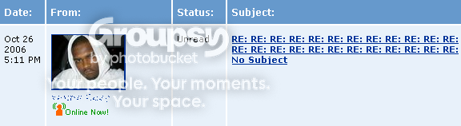

#11865 1 2006-10-21T22:02:35Z Tsukatu A whole bunch of my friends have done this and told me about it, but that doesn't beat experiencing it for myself. I made a fake profile of an 18-year old bisexual girl with an insanely hot picture and now I'm seeing how much attention I get.
I'm not going to post the link to the profile here. If you know about this already, don't post the link. If you stumble upon it, don't post the link. I'm too paranoid about some of you bastards ruining my fun. I'll post the profile link in good time, don't fret.
I will, however, post status reports when I can, beginning with...
0 hour:
Just made the profile. Bait is set. Let's see who bites.
7th hour:
8 friends already. Moving a bit faster than I expected, given that these guys added me between 1:00 and 8:00 am. I got everyone from random hot girl groups to 14 year olds in Georgia.
16th hour:
38 friends, and some guy's giving me advice on modeling. Most of the people adding and messaging me are guys between 21 and 28, which is more than a little creepy. I've still kept the trend of responding to all messages, but it's getting tedious. Curiously enough, no comments. I'm sure I'll get a fuckton from those random dudes I added but didn't receive messages from.
17th hour:
42 friends. Some total loser 15 year old Protestant from Alabama confessed his love to me. $10 says he sent the message after masturbating to my face. That makes five in total who want my AIM immediately. The trend is still 21-28 year olds.
#244155 2 2006-10-21T22:07:26Z dejablue 17th hour:
42 friends. Some total loser 15 year old Protestant from Alabama confessed his love to me. $10 says he sent the message after masturbating to my face. That makes five in total who want my AIM immediately. The trend is still 21-28 year olds.
hehe, im from alabama... but that wasnt me... i think

funny experiment... keep us updated
#244159 3 2006-10-21T22:10:31Z Ad This had to be done...
Keep us up to date! *Frantically searches for Space to see who you look like

*
#244195 4 2006-10-22T00:22:43Z Greengooguy49 Sounds interesting! I might try this later and see what results I get!
#244200 5 2006-10-22T00:38:10Z Zres 
Ha! Brilliant! This will be good!
#244201 6 2006-10-22T00:38:13Z AMomentLikeThis I get friend requests all the time, I'm nothing special. I usually just message the people rather than accept their request, as I only want people I actually know to be on my list. You can have some awesome conversations on myspace, serious and childish ones. So in my opinion your experiment is pretty dull.
#244216 7 2006-10-22T01:02:13Z Kablizzy Hate to burst your bubble, Suki, but LV and Dave and I kinda
Beat you to the punch. I don't mind posting our link, since I don't care about "Lil' Lizzie Tramp" anymore. =D
Edit: Also, mine was to prove a point that any underage kid could do this very easily with a hotmail account and a knowledge of how to pick photos to make different girls look like exactly the same girl. I was going to crusade against myspace, but really? I don't care anymore.

#244311 8 2006-10-22T05:12:47Z Keron Cyst ;_;
Ah, the world...
#244321 9 2006-10-22T05:59:24Z Tsukatu Dude, Blizz, I know. That's what gave me the idea. I know that other people have done this plenty of times, but I wanted to see what it's like for myself cuz there's nothing quite like living through the deletion of 98 emails in your inbox in which MySpace tells you you have a new friend or comment or message.
AMLT: I did not ask to be a single person's friend. I put the profile up and accepted everyone who added me.
25th hour:
54 friends. The friend pickup rate seems to have slowed down, probably because net rush hour is over with. I fully expect it to pick up later on. I'm replying to every single message people send me. Some people have never sent me messages or left a comment and a rare few prefer to speak through comments alone, but there are several people who are very persistent with the message business.
This one guy in particular, a 34 year old from Washington, is very interested in what my life is like and what I do in a day. I mean, he keeps asking, and I keep telling him that I don't tell strangers that sort of stuff.
The other guy wants to be a jeweler like his father. He's 25, and he's also very persistent in the getting-to-know-me business. No more oddities, really.
#244325 10 2006-10-22T06:31:07Z elaxion This is awesome, try it with a guy next time and see who adds you then.
#244334 11 2006-10-22T08:00:15Z Kablizzy Dude, Blizz, I know. That's what gave me the idea. I know that other people have done this plenty of times, but I wanted to see what it's like for myself cuz there's nothing quite like living through the deletion of 98 emails in your inbox in which MySpace tells you you have a new friend or comment or message.
I... oh. I thought we had done that after you left for TEH BOSTONZ.
Sorry, man. Carry on.
Elaxion: On my regular myspace, I get maybe ten or so friend request per week. Of those ten, 8 or so are automated spambots, one of which is usually someone I knew from high school, long lost friend, or some such, and the last one may be someone else, who may or may not genuinely want to get to know me. No messages, usually, no comments, really.
As contrasted to my lizzie account? Well, 600 friends... Lessee, actually, I'll check my messages now...
I... HEOWGWOGHETJORPJRYIPJRP6
Goddamnit, Suki, gimme a fuggin' coronary. Oh, right other people. Anyway, only 4 Friend requests tonight, I usually get 10 a day or so. Usually around the same number of messages. Nothing unfathomable, but still, an amazing amount for someone who doesn't exist, eh?
Anyway, your ssekrit is safe wit lizzie lol
#244368 12 2006-10-22T12:09:09Z Tsukatu Hour 32:
58 friends. It's getting tedious replying to some of these guys. "ya u kno im jus sayin if u wanna hang out u kno we should like go hang out at a party or somthin u kno hit me back!!" I'm almost tempted to respond with, "yeah, that's the eighth message you've sent that added literally no content to your previous messages; if I wanted to hang out with a creepy 26 year old I'd have made plans with you a long time ago."
#244379 13 2006-10-22T13:02:09Z iangb Fact: 2/3 of internet users are FBI agents pretending to be 14 year old girls.
I can't even remember what book I got that out of. it made me snigger, anyway.
Have fun. Pull some g33ks.
#244475 14 2006-10-22T17:24:57Z ZZ9 Fact: 2/3 of internet users are FBI agents pretending to be 14 year old girls.
I can't even remember what book I got that out of. it made me snigger, anyway.
Made me snigger as well.
#244521 15 2006-10-22T19:24:23Z Trogdor007 That's awesome, Suki. This is why the internet is a trap for everyone who has ever had an urge.
#244625 16 2006-10-22T22:08:26Z thegameguy lol, to many pervs*closes myspace*. Thanks suki, thats the last time i use myspace.
#244629 17 2006-10-22T22:13:22Z AMomentLikeThis Riight.
I think its sad, that you actually carried out such an experiment =/
#244650 18 2006-10-22T22:40:22Z Fol67 erghhh, im actually afriad to use myspace now. *deltes myspace*. And how is the xperiment "sad"? ps, i LOVE the new avy and siggy, *poke*
#244795 19 2006-10-23T01:00:17Z AMomentLikeThis Well I'm no stunner, I'm not the coolest guy in town, I'm nothing really. Yet I get plenty of friend requests etc each day. Doesn't mean I have to accept them. And plus, most people just want to chat, thats never done any harm.
#244813 20 2006-10-23T01:44:11Z Tsukatu Hour 46.5:
72 friends. Every time I check my email I have a few emails about events at my college, one from a relative, three pieces of spam that snuck past gmail's spam filter, and upwards of 40 to 60 notifications of comments, messages, and friend requests on MySpace. Making one of my oft-used email accounts was not a good idea, in retrospect. The messages I get on MySpace these days are now five or six random people telling me I have gorgeous eyes and that we should totally get to know each other, and the four or five regulars that are actively pursuing more personal means of communication.
This one guy keeps giving me links to these crazy cool startup modeling sites. Whack, yo.
But then there's this other guy, Shaun, who is totally into this fake persona. He does occassionally say things like "if that girl in your pic is really you," but I'm pretty sure I have him convinced that the profile is legitimate with my artful replies, because he's more focused on putting content in his messages than he is asking about who I am. But I really feel bad in a way because he's a cool dude and doesn't really deserve to be tricked like this. I'll end up telling him at one point. Probably soon. I'll turn it into some crazy life lesson. It'll be easy; he's "spiritual."
Other than that, the idea of helping out an anti-predator online vigilante group with this profile is becoming more appealing.
#244844 21 2006-10-23T02:54:51Z LittleViking Man. I don't know how you people do it. My Myspace account gets no more than one friend request a month (maybe one a week if I'm lucky), and I just turn most of those down anyway.
#244850 22 2006-10-23T03:16:51Z Keron Cyst ... My Myspace account gets no more than one friend request a month (maybe one a week if I'm lucky)...
... and I just turn most of those down anyway.
I don't know how you people do it.
#244851 23 2006-10-23T03:32:32Z Tsukatu Man. I don't know how you people do it. My Myspace account gets no more than one friend request a month (maybe one a week if I'm lucky), and I just turn most of those down anyway.
No worries, man. My
real account (before I deleted it) was pretty much the same.
This account is blatant whoring. There are far more horny guys on MySpace than horny girls, though both populations are admittedly quite substantial.
Then again, I didn't make a single friend request. Well, except to Blizz' fake MySpace.
#244858 24 2006-10-23T04:20:17Z Kablizzy What I find hilarious about everything is that I have absolutely *zero* information on Lizzie's Myspace page. I just filled out the personal info place, put up some pics, and that was it. No bio, no blog, I never respond to PMs, and they still fall for it.
#244877 25 2006-10-23T07:55:24Z Tsukatu Hour 52.5:
76 friends.
Oh my fucking God. Oh my God.
Alright, so there's this guy named David. David is 35 years old and married. David's default picture looks like something stolen from a Men's Warehouse catalog. David's message to me (no friend request) was a long, poetic, obviously subversive monologue including such fun terms as "I think the most sensual of acts is to penetrate the veil that exists between us all. It isn't about the sex, but it could be if sex does the trick. I mean the sense of becoming one with the other person, with who they are, with all of it."
Anyway, I gave Dave- er... David what he was looking for. We'll see if I get to punch a pedo in the dick in the near future.
#244916 26 2006-10-23T09:57:19Z Impulse Hour 52.5:
76 friends.
Oh my fucking God. Oh my God.
Alright, so there's this guy named David. David is 35 years old and married. David's default picture looks like something stolen from a Men's Warehouse catalog. David's message to me (no friend request) was a long, poetic, obviously subversive monologue including such fun terms as "I think the most sensual of acts is to penetrate the veil that exists between us all. It isn't about the sex, but it could be if sex does the trick. I mean the sense of becoming one with the other person, with who they are, with all of it."
Anyway, I gave Dave- er... David what he was looking for. We'll see if I get to punch a pedo in the dick in the near future.
Awesome, you rock! This is teh funneh and please update when you punch the f$#%er in the nuts.
#244997 27 2006-10-23T15:45:02Z Britannia While GOTRM is here...
Was browsing the high scores and found this...
Seeming as we now know someone who does it, can I ask why you do it?
This is not meant in a bad way, just I would like to know
Take it to another thread or PM. Attachment (lost): post-17-1161618302.png
#245006 28 2006-10-23T16:29:35Z blue_tetris "yeah, that's the eighth message you've sent that added literally no content to your previous messages; if I wanted to hang out with a creepy 26 year old I'd have made plans with you a long time ago."
u_u
Anyway, I gave Dave- er... David what he was looking for. We'll see if I get to punch a pedo in the dick in the near future.
Eighteen isn't really pedophilia. It's barely ephebophilia. Also, I come out on the rather neutral side of all this. I've only ever noticed a marginal difference between the people who get suckered in by these exploits, and the people who slave over concocting them. Does the prostitute really deserve to chuckle when she manages to net a total loser with little effort? How about during the handjob? Should she be chuckling then?
*fetches the Idiot's Gudie to Subtlety and tosses it underhanded to Suki*
^_^
That said, go ahead and have your fun. I used to do this sort of thing back in my day. There was this service called Mplayer that was sorta like a big chat room. I'd go on as this chick named Angeline and attract guys and then cyber with them for a couple hours and then say "lol i was just fucking with u dude!!!!" and they'd invariably get pissed off, but thank me anyway for servicing them sexually. I had a very persistent date named ConstanceTheTerrible who was about of legal age. He spent a few days getting to know me and then he took an plane trip over to meet me. And I fucked him in the ass, repeatedly, over the course of six hours.
Then I confessed that I was just messing with him the whole time and he was all like: "Woah! You totally got me!" So I fucked him up the ass again, for an additional six hours.
Is any of this getting through? Also, could I borrow the Idiot's Guide to Subtlety?
#245098 29 2006-10-23T21:16:39Z Giacomo What exactly was the point of doing this? I like the idea. I assume it is to count the number of perverted men on MySpace.
#245142 30 2006-10-23T22:21:57Z Tsukatu Dave:
You-
I-
...what?
The difference between 18 and 35 is huge. I'd definitely say that, starting at age 4, attraction to someone half your age is pedophilia. And that's thinking pessimistically. Sure, it gets slightly less wierd with age, but the lesser of two evils is still evil. I mean, you'd look twice at a 35 year old dating a 70 year old.
I can't see any substantial case against this guy being a fucking pedo.
And if he's playing around, I'm obliging him anyway. It's not like I told him off. Yet.
Hour 67:
99 friends. Creepy guy hasn't responded. *shrug*
There has been a sudden influx of 15-year olds and (probably fake) bisexual girls.
Shaun confessed his love. Awwww.
NowIgottagotoagoddamnedchemtest.
#245145 31 2006-10-23T22:29:34Z blue_tetris There has been a sudden influx of 15-year olds and (probably fake) bisexual girls.
Hot!
*concocts a masterful plan to attract nubile bicurious babes in need of an M for their MFFFFFFF encounters*
....WHAT!
#245148 32 2006-10-23T22:35:04Z scythe33 lol!
Doesn't surprise me how many stupid people there are. can you tell what part of the country they're from?
Hell, can you tell what country they're from?
#245157 33 2006-10-23T22:57:51Z Tsukatu lol!
Doesn't surprise me how many stupid people there are. can you tell what part of the country they're from?
Hell, can you tell what country they're from?
One of the guys on my friends list is clearly a foreigner, actually. He says he's MySpace's official Security Administrator and his name is "Hackerz."
I started having fun with him once I realized that he's foreign.
My comments are blue and in italics.
Him:
Subject: Damm !
Hey you 2 Scorpio Nice to Meet You Miss
[my name] any way this is
Pius Wilson
Hackerz
MySpace Security Administrator.
Me:
Subject: RE: Damm !
o my god your a hacker?? isnt that illegal or something???? how did u get to work for myspace if u tell everyone?
 [my name]
Him:
[my name]
Him:
Subject: Worry !
<-- "worry?" wtf!?
Hey Wats Up
[my name]. Nothing to Worry I M Here for Secure U Guys from Other's and Nice to C That U R Scorpio I Really Appericiate That
(yeah, he said he appreciates it that I'm a Scorpio; you read that right). Becoz I M 2. And Looks Like God is Still Makes Beautifull Gals. any way this is
Pius Wilson
Hackerz
MySpace Security Administrator.
Me:
Subject: RE: Worry !
Wow Lol Three Cheers For Capitilizing Every Letter In The Sentance. And Thanks I Think I Chose My Zodiac Sign Wisely
(he said he appreciates it  )
). k im gonna stop the capitilizing thing now cuz its wierd lol.
so wait if u work for myspace y dont u have zilions of friends like tom????
and wait can u read my messages and stuff?? o my god thats so freaky lol!!!!!!
[my name]
Him:
Subject: Nice !
Hey Verry Intelligent Question Becoz u r Scorpio. Any Way Your Question is That Why I Don't Have Thousands And Millions Of Friends So Reason is That I Like The Person I Want TOM (tammu) lol. He Has More Friends Becoz he Can't Stop People to Add Him As Friend Othere Wise People Will Think Verry Odd. But I Have Excuse and That is That " For Secuirty Resason " hahaheheheh. anyway My First Friends will be SCORPIO. thats it. andy way now we can be Nice Friend if U Want U Gud Looking , Beautifull , Cuty , Specially Sexy and Most Biggest Think for Me U R SCORPIO. and i really like your FACE
(LMFAO!! "I like your FACE."). any way this is
Pius Wilson
Hackerz
MySpace Security Administrator.
[omfg his phone number]
Me:
Subject: RE: Nice !
[clearly stolen from a StrongBad email]
lol!! im've was to make football often times. play? know, best football results twice again lol! as a wery old i can fathom the scene to be with me looking always as i ever did.......it was Scorpio (he borrowed mine lol). every age i has seen out as a baby - prehaps i has the solution!!! lol!!!!!
equal hacker goes it loose???
[my name]
Him:
Subject: Wats Up
So Wats Going On !
[ROFL. He didn't even address the last thing I sent him.]
Pius Wilson
Hackerz
MySpace Security Administrator.
[note that he didn't include his phone number this time - maybe he thinks I'm psychotic?]
Me:
Subject: RE: Wats Up
every age i has seen out at chemistry test in the soon future

perhaps attempt is too difficult to be the doctor!!
no news otherwise lest equivocation be your fresh lol
[my name]
...and that was the last I'd heard from him.

#245161 34 2006-10-23T23:28:06Z Sketch Me:
Subject: RE: Worry !
Wow Lol Three Cheers For Capitilizing Every Letter In The Sentance. And Thanks I Think I Chose My Zodiac Sign Wisely (he said he appreciates it metanet/hm.gif). k im gonna stop the capitilizing thing now cuz its wierd lol.
so wait if u work for myspace y dont u have zilions of friends like tom????
and wait can u read my messages and stuff?? o my god thats so freaky lol!!!!!!
That actually looks like a girl wrote it.
sometimes i wonder...
#245216 35 2006-10-24T02:01:52Z Tsukatu That actually looks like a girl wrote it.
sometimes i wonder...
Stop thinking on those lines immediately. We do
not need another James here.
#245218 36 2006-10-24T02:07:33Z iangb /snigger
I know what he's talking about.
*is smugly Veteran-ish*
#245224 37 2006-10-24T02:24:10Z Trogdor007 Wow... even *I* got that reference.
[/feeling old]
#245226 38 2006-10-24T02:25:41Z Kablizzy /me swiftly slaps a wig 'pon Suki.
#245260 39 2006-10-24T04:25:10Z Keron Cyst That must've taken a lot of willpower to send that guy such notes, Suki
#245261 40 2006-10-24T04:28:43Z Tsukatu That must've taken a lot of willpower to send that guy such notes, Suki
Just anonymity. 4chan will do that to ya, I guess.
#245274 41 2006-10-24T06:27:15Z shoftee Heh. Nice experiment. It makes me hate MySpace even more
*also got the James reference.*
*feels a bit old too*
TS
#245295 42 2006-10-24T08:05:11Z Black Sheep Boy That actually looks like a girl wrote it.
sometimes i wonder...
Stop thinking on those lines immediately. We do not need another James here.
Hang on. Wait. But you
are female, aren't you?
#245330 43 2006-10-24T10:27:22Z Trogdor007 Oh yes, because Suki's her name. Definitely.

#245337 44 2006-10-24T10:54:30Z astro Do you get that reference too?
#245340 45 2006-10-24T11:00:43Z Trogdor007 Well duh... I did make the reference.
#245552 46 2006-10-24T22:58:32Z Fol67 erm, sukis a guy. A hot one to, lol(jking).
#245598 47 2006-10-25T00:33:33Z Kablizzy He is hot. Totally not jking.
#245603 48 2006-10-25T00:39:18Z Banannakid Took me a while to get that second joke. Damn, we are old.
How many years ago was that?
#245690 49 2006-10-25T10:25:35Z Trogdor007 Ffff... I think it was about 1.5 years ago. I was still just a recurring guest at the time.
#245696 50 2006-10-25T10:49:07Z astro I think it was more than that, because I don't think I was a registered member when it happened.
#245698 51 2006-10-25T10:53:27Z Floorhugger this is a great idea.
I have no Idea what you are talking about. a link to the reference mabye?
#245766 52 2006-10-25T18:04:33Z Tsukatu this is a great idea.
I have no Idea what you are talking about. a link to the reference mabye?
http://metanet.2.forumer.com/index.php?showtopic=1032
My gender is a topic of discussion pretty much throughout the entire thread.
Ah, memories. *sigh*
#245775 53 2006-10-25T18:48:18Z Tsukatu Hour 88:
115 friends. The rate is about three or four friends per login, which I usually do twice a day. The 15-year olds have come and gone, and now I'm getting the bi girls.
For the people that are messaging me, I'm starting to play to their likes. I talk about all the parties I've gone to and what I've done to the guy who loves to party, I talk about my (invented) drug experiences with the guy who likes marijuana, and I even showed off some of my totally newbish 3d modeling work to the professional graphic design artist guy.
More people are getting impatient that I'm not giving out my sn. I haven't even made one yet, and I'm not sure if I'm planning to. I already gave a fake one to one of the most impatient people, but I don't think I'm going to use that name. Heh. Loser.
#245947 54 2006-10-26T03:01:16Z Trogdor007 I dunno... I sort of feel that making an SN leaves you very vulnerable. I'm not saying you'll fall out of character (Though you'd be very succeptable...), but it's taking the experiment a bit too far.
#245957 55 2006-10-26T03:44:03Z Tsukatu I was just thinking the other day about making the experiment mean something. It'd require me to start over again, which I could see doing in the near future if I think that the meaningful experiment would be more entertaining... basically, I'll find two pictures of the same person, both of them attractive, but make one blonde/blue-eyed and one brunette/brown-eyed, then stick them in the same area and see who gets more attention.
#245969 56 2006-10-26T04:26:30Z Fol67 *Votes for blonde* We all know they'd flock around the blonde. Lol, and trogdot I think suki can handle him self.
#246019 57 2006-10-26T10:20:41Z Trogdor007 *adds trogdot to a list of names I've been called*
#246029 58 2006-10-26T10:54:22Z Kablizzy I dunno... I sort of feel that making an SN leaves you very vulnerable. I'm not saying you'll fall out of character (Though you'd be very succeptable...), but it's taking the experiment a bit too far.
Vulerable? To what, though? This is the intarwebs. Series of tubes and whatnot. What can they do to me if I hide behind a screen name? They can call my bluff, and then, oh, shit, sucks to be them.
#246163 59 2006-10-26T21:46:33Z Tsukatu Some people I've been talking to over messages have been very good about changing up the subject every now and then.
Then there's this guy:

#246166 60 2006-10-26T21:48:55Z Sketch ...
This is actually killing me.
Please just tell me you will eventually post the link.
#246198 61 2006-10-26T22:40:40Z Tsukatu ...
This is actually killing me.
Please just tell me you will eventually post the link.
Things are really slowing down these days, so I think this would be a good time.
http://www.myspace.com/angelashlee7
EDIT: Ooh, new page. How convenient.
#246224 62 2006-10-26T23:28:51Z Guest Ha! Thats some avant garde stuff you got going Tsukatu.
#246231 63 2006-10-26T23:37:04Z Trogdor007 Well, if one guy/girl finds out, who's to stop him from posting it all around there. It would ruin the experiment.
#246374 64 2006-10-27T11:14:39Z Rincewind SW http://profile.myspace.com/index.cfm?fusea...endid=122534085
I reckon that this is a more obvious experiment. At least, I hope so.
Good experiment, Suki. You made it less blatant than the above.
#246743 65 2006-10-28T05:18:55Z Kablizzy In fact, I doubt that most of the fake profiles on Myspace are experiments, but rather, just trying to get naked pics of naked chicks. HAH I MAD TEH RHYME
#248234 66 2006-10-31T05:19:38Z Tsukatu Things were slowing down because I had a crazy weekend and couldn't be bothered to write 23 inane responses to sheep. Maybe I'll just baa at them.
I spilled the beans to four people to see how they'd react. I made a MySpace group,
http://groups.myspace.com/ThereAreNoGirlsOnTheInternet, linked each one of these guys to that group, and then wrote a long, sophisticated appology for misleading them.
The first guy was "Ilge Tolks." He didn't have any pictures of himself, and his main interest was in getting modeling resources for 18-19 year old girls. He was very devoted to this, warned me about scams, and (what convinced me that he wasn't a creep) only offered to take photos to start me off just once,
after mentioning several resources for that, and he did it very modestly.
He never responded.
The second guy was Tom. Tom is interested in 3-D modeling. When I broke the news to Tom, it went over his head, and he didn't understand what the big deal was. I could've sworn he wanted to do me, but whatever. Maybe he's trying to save face.
The third guy was very determined to chat with me via webcam, and before I finally agreed to it, I sent him the link to my group. I didn't write an appology or anything, because he was kind of a tard. He became very laconic and thanked me bitterly for "playing [him] like a chump."
The fourth guy was the guy I was most involved with. He was smart and introspective, and it seemed from his profile pictures that he thought he was very attractive. As a matter of fact, I'll toss in our exchanges right here. He didn't, after all, have me sign anything regarding confidentiality of our conversations.
He took it well, I suppose.
Dialogue:
Quote
From Shaun
Subject: are you real?
Body:
and can we talk? you have philosophy in here as a key word... let me know.
From Ashlee
Subject: RE: are you real?
Body:
dont lie u want to talk to me cuz u think im pretty dont u, lol
course im real im too young to get a boob job!! tho i totally woudnt even if i was old enough cos i like myself the way i am.
ya im interested a bit in philosophy mostly the theism vs atheism stuff
are u a philosophy major or something??
<3 ashlee
From Shaun
Subject: RE: RE: are you real?
Body:
I wouldn't be talking to you if I didn't think you were pretty. Also wouldn't be talking to you if you didn't have something that interested me(and don't jump to the conclusion of sex). you tell me what you think about who I am. I was a philosophy majory. Then dropped out to pursue other things(music, movies, photography, my own philosophy). It would be nice to hear from you. Nice joke btw. That says so much. Makes me actually care about what you say.
From Ashlee
Subject: RE: RE: RE: are you real?
Body:
what do i think of u? well u said you wouldnt talk to me if i wasnt pretty :P i know u meant it as a compliment but be carefull what u say
so what do u do now? i heard philosophy majors make good waiters lol
<3 ashlee
From Shaun
Subject: yummy
Body:
If you re-read the second line of my message...
Also wouldn't be talking to you if you didn't have something that interested me
That means I value beauty on the inside and outside. A person can't be beautiful on the outside, if they aren't on the inside. and vice versa. So yea, I do watch what I say, and I mean what I say. :-)
I have heard that philosophy majors make good waiters. I'm glad I dropped out of college in that case. I'm more of a do it yourself kinda guy. And since I believe in myself, I'm able to do whatever I want. and what I want is to make people happy. so I do that.
From Ashlee
Subject: RE: yummy
Body:
i dunno i know alot of girls who r really pretty but also totally mean. wouldnt that be a girl whos pretty on the outside but not on the inside?? or r u one of those ppl who think that everyone has something good in them?
so wait u just make ppl happy???? thats your job description lol??
<3 ashlee
From Shaun
Subject: intuative
Body:
I do believe everyone has good inside of them, just like I believe everyone has evil in them. It's all about which parts of the human psyche you choose to let exist in your reality. you seem pretty, but you only have one picture on here, so you might not be pretty, or even ashlee. maybe you are carl the 35 year old post man. OR you could be this incredible adorable blonde girl, who has a seemingly pretty cool personality. I dont know. who are you?
From Ashlee
Subject: RE: intuative
Body:
lol im an alien!!!!! u wanna meet so i can kidnap u?? j/k
i dunno i thought at one point that everyon had some good in them but i think i just got synical or sumthing now i just see ppl as ppl i dont really think of good and bad anymore. haha and ever since i became an atheist i distinguish more between religuois ppl and atheists than good and bad parts..........kinda bad of me to judge like that but i cant help it i mean i still am nice to everyone
<3 ashlee
From Shaun
Subject: RE: RE: intuative
Body:
right you are. and beautiful to boot. well. were do we go from here? hey hello online every now and then? maybe you'll come to a few shows next year. what are you even interested in, in this life. what do you want to do.
From Ashlee
Subject: RE: RE: RE: intuative
Body:
come to what shows? your in shows??
in this life i basicly want to persue what any human should and thats whatever makes me happiest. this is gonna sound really corny at first but hopefuly ill explain it better in just a sec basicly i like helping ppl. one of the most rewarding experences ive ever had was when one of my friends boyfriend broke up w/ her in a really mean way and she thouht they were really close it really got to her. shes my best friend so i talked to her and we sat in her room talking for hours and she said i really really helped her alot and she was like fine the next day and that made me feel really close to her like even closer than we alredy were and it just felt so good.
so ya i think i get high on helping ppl lol!! so i think i want to be a doctor cuz i really get a lot of fulfilment out of helping ppl as much as i possibally can and i kno i can help ppl best if i can fix the bad stuff inside of them lol
so haha long story short i wanna be a surgen or some other kind of docter
i was wondering u said in one of your blogs that your looking for someone who can keep up with u spiritually so does that mean your very spiritual?? what do u want out of life? to pursue your spiritualty????
<3 ashlee
From Shaun
Subject: RE: RE: RE: RE: intuative
Body:
I liked your answer... a lot. I'm in the business of helping people. I have my own band, which will be playing around just boston for all of 07. should be fun. I am spiritual, though lately I haven't been doing much. I play for free, meaning the money of the ticket price goes right to charity. its going to be something called
pay for charity", and hopefully other musicians will follow suit. and I take pictures. I just live. until it's my time to go. I want to help end human violence and war, but it isn't something just one person can change. And I'm alone in boston. despite being an entertainer, I dont like drawing attention to myself. I enjoy down time, and company of a few close friends. I have to smile, cry, scream, complain, laugh and love for my job. At the end of the day I just want something that keeps me sane. because my head is most certainly powerful beyond measure. I'm just missing that thing I can keep safe and hold and play with. so. until I get that again, i'll just keep doing what I'm doing. keeping to myself, and thinking of ways to make the world a better place. what I want from life is peace. and the only time im happy and peaceful is being around an amazing woman. there aren't too many of those around though...
From Ashlee
Subject: RE: RE: RE: RE: RE: intuative
Body:
lol no girls in your life good enough for ya huh? jk!!
get a kitten!!!! serisly it sounds like u really need a kitten name it somthing fun like car or dammit. lol
<3 ashlee
From Shaun
Subject: RE: RE: RE: RE: RE: RE: intuative
Body:
Oh believe me. I agree. Though we may not be talking about the same things, a kitten is what I need. just the idea of it... they are amazing. My last girl friend was like a kitten, and I left my cat of 10 years back in my home town :-(. You can bet I've been missing the feline in my life. So what do you do? just go to classes now? any chance we could talk somewhere else other than email? aim or even lame text messages? hah. whatever. I've got nothing better to do because, like you said, no one good enough for me. and the few people I don't push away, may choose to walk the other way, just to spite me. I get that a lot... whats it like. being you. if this one picture is you. beautiful and eighteen. it was the time of my life so far, i know that.
From Ashlee
Subject: RE: RE: RE: RE: RE: RE: RE: intuative
Body:
wow thats kinda emo lol. no im kidding i really didnt mean that in a bad way im just pointing it out.
o man and i totaly have a cat at home too. its four y/o and its name is maggie. she was like my truest friend in high school i know it sounds cheesy but i told her everything and we totaly loved each other. no i dont think i can talk to cats lol so dont even go there. some of my friends had that theorey
[now watch this masterful play:]
she was totaly an attension whore though lol she would jump into the foot of my bed in the morning and crawl under the blanket all the way to my face and lick me to wake me up. it felt kinda funny to cuz if u dont think a fuzzball crawling under your blankets feels wierd enough i had these silk sheets that got me in the habit of (o god why am i sayin this lol) sleeping like, u know, without anything on so it was like just me and my cat under my blankets. anyway im not gonna get into that if u dont mind lol.
but ya i totaly miss my maggie and my silk blankets (i couldnt fit them in my lugage and my dad forgot to bring them on parents weekend). right now im just studing sleeping eating and working basicly. sometimes my friends know about a party or something and we go but we actualy havent been to one in so long which kind of sucks. :/
sense your out of college what is your day like??? i cant imagine having a day without classes lol!!
<3 ashlee
From Shaun
Subject: Ha
Body:
I loved that last message. ['Course he did. He probably wanked to it that night.] I think you are a good natured person, and so am I. so, of course you are gonna tell an awesome story like that! my cat was the same way, being an attention whore, and no, i do think you can talk to cats. everything around us is alive. your cat loved to listen im sure. ever see the movie go? its a good flick. In it, one of the guys is rolling on e and looks at the cat, and in subtitles it says "I can read your thoughts". Its pretty funny
I spend my days listening to a lot of led zeppelin and the beatles, playing a lot of music, just living my life. its real boring right now because I dont have a fun girl to get to know. and before you say that sounds emo, i'll clarify. in my profession, all girls want to do is sleep with or marry me, or both. it is very hard to find a good chick that isn't all about drama right off the bat. I haven't been to a party in a while either, though my friends are coming up for halloween and we are gonna have a bash. and, my roommate is gone from december to january. so you know there will be something good going on that month. ahh hah. okay. lets talk more tomorrow. I like you. meh. i dont care if you dont like that. you have personality, which is more than I can say for most. and gosh you are fucking pretty. If your myspace didn't already tell me that you hate tv, i would say you must watch a lot of greys anatomy... night.
I didn't respond to that message. Much later on, I let the cat out of the bag (felt like an appropriate turn of phrase):
From Ashlee
Subject: Every bubble needs bursting.
Body:
This message is being sent to whomever I feel deserves it, likely because I admire your character or otherwise feel sorry for leading you on for the sake of brutally meaningless entertainment.
http://groups.myspace.com/ThereAreNoGirlsOnTheInternet
Shaun,
Reality is what we make of it, eh?
It was absolutely killing me to continue leading you on out of morbid curiosity. I was desperately hoping that you'd see through the artificial stories and come to enough suspicion that you'd leave me alone, but I'm afraid I may have been too convincing to spare my own conscience.
Ashlee began as my anima, actually. Y'know, the Jungian thing. She was sort of a combination of an opposite and a complement to my own personality. Or at least she was designed to be. I couldn't resist the temptation to give her some of my own traits, such as my deep interest in philosophy and theology.
Seriously now, what kind of blonde bombshell is an atheist? That has NEVER been my luck. And look at her heroes - Guy Fawkes? Giordano Bruno? When would a legitimately irresistable adolescent girl ever hear the name of an obscure Italian philosopher? I would, because I'm interested in philosophy, but a girl like Ashlee? No way.
If you're still even reading this, let me say with my most sincere appologies that you, of all the people with solid character and firmly grounded wisdom that have met Ashlee, were the largest hit to my conscience. I've lost sleep because of what I imagined I was doing to you. Feel free to rub that in; I openly admit that I deserve it.
We all wish there was an Ashlee in our lives, but the sad truth is that we need to work with what we have. Life blows. If nothing else, I hope this was at least a learning experience.
I hope you'll one day find your Ashlee.
<3 "Ashlee"
From Shaun
Subject: RE: Every bubble needs bursting.
Body:
What an amazing message! right now I am listening to the pipers at the gates of dawn, specifially the opening track. Thanks for the.... interesting message. I've been in the internet game before. I understand the things that happen. It's more about contact, you know. than the actual meaning. There is a girl like "ashlee" out there. and until I find her(I know who she is is) I enjoy the ride. Enjoy yours.
He followed it up with...
From Shaun
Subject: btw
Body:
you are wrong. stop looking at the negative.
From Ashlee
Subject: RE: btw
Body:
Wrong about what? Something negative I assume... am I wrong in being pessimistic about your reaction to knowing that Ashlee doesn't exist?
What do you mean?
He hasn't replied yet.
Dave: Are you suuuure it's only UC Berkeley? Are you positive? I've also dug up some curious contact information... let's see what happens!
#248247 67 2006-10-31T06:25:46Z Kablizzy Oddly enough, there just happens to be a girl in my Western Religions class that is both an atheist and a "bombshell," I suppose you would call her.
In either case, he took it relatively well, I take it.
#248254 68 2006-10-31T06:45:38Z LittleViking That revelation message was actually really nice. After reading all of that, it was a good way to end it. Honestly, I was expecting something more like "LOL PENIS" along with a picture of you, naked, sprawled across your bed, with Ashlee's picture photoshopped over your head.
#248267 69 2006-10-31T08:11:17Z wedgie ^lmao. That would have been a nice touch.
That girl is pretty hot though.

#248557 70 2006-11-01T06:28:28Z DemonzLunchBreak This is possibly the funniest and cruelest experiment ever.
I liked the inclusion of Jungian concepts...
The whole philosphy idea was pretty awesome.
#248560 71 2006-11-01T06:57:12Z Black Sheep Boy Quote
We all wish there was an Ashlee in our lives, but the sad truth is that we need to work with what we have. Life blows. If nothing else, I hope this was at least a learning experience.
I'd say that it was this he thought you were wrong about.
"We need to work with what we have", "Life blows", "A learning experience." You know, the whole "I can't believe it ended like this, and if I were to do this all over again- oh, who am I kidding, I'd do everything exactly the same. Except, umm. Not specificically with you. That'd just be... too wierd."
#249411 72 2006-11-03T04:22:15Z Tsukatu I'm not counting hours anymore. Now I'll just be counting the morons.
(Ilge Tolks removed me from his friends list, by the way. He never replied to my message.)
I'm still getting three or four friend requests per day.
These morons no longer have an excuse.
Attachment (lost): post-17-1162527735.png
#249454 73 2006-11-03T11:03:17Z Levinous HAHA. That part with Maggie was really clever.
I tried to view that group, but myspace was screwing up!
I logged in (even though it won't remember me when I tell it to) and clicked the link. Then it says 'You must be logged in to do that!'. I tried it again and again, but it still wouldn't let me see it. It's fucking annoying.
Btw, can I add you?
I want to act like I don't know the truth...

#249482 74 2006-11-03T13:48:55Z stepself These morons no longer have an excuse.
Your heroes list is hilarious! Very strange bedfellows, indeed.
#251322 75 2006-11-07T22:19:06Z shadowXEnga Hmm... if there was a way to make money off of this... like find a girl that has nude pics that you could find... and act like your an innocent young girl... then once people like "david" ask about you, find a way to get them to deposit money into a paypal acount.. then send them pictures slowly... even though they arent yours... he will become more intwined in his pedophilia... and you will make money by using pics of internet sluts with small tits that could pass for younger than 18... yeah... make money
#251327 76 2006-11-07T22:22:35Z Brttrx Hmm... if there was a way to make money off of this... like find a girl that has nude pics that you could find... and act like your an innocent young girl... then once people like "david" ask about you, find a way to get them to deposit money into a paypal acount.. then send them pictures slowly... even though they arent yours... he will become more intwined in his pedophilia... and you will make money by using pics of internet sluts with small tits that could pass for younger than 18... yeah... make money
That's fucked up.
#251330 77 2006-11-07T22:25:30Z LittleViking Hmm... if there was a way to make money off of this... like find a girl that has nude pics that you could find... and act like your an innocent young girl... then once people like "david" ask about you, find a way to get them to deposit money into a paypal acount.. then send them pictures slowly... even though they arent yours... he will become more intwined in his pedophilia... and you will make money by using pics of internet sluts with small tits that could pass for younger than 18... yeah... make money
It would be a lot easier and more profitable to just start up a porn site. But that's not the point here.
#251338 78 2006-11-07T22:36:09Z shadowXEnga Haha, as fucked up as it may be, it would work...
#253652 79 2006-11-12T21:05:05Z Fallen haha i know this is old
but it's still funny as hell
#253842 80 2006-11-13T02:45:16Z shadowXEnga Brttrx, I love your Icon and Sig...
#253845 81 2006-11-13T02:48:14Z Brttrx Brttrx, I love your Icon and Sig...
Shank you.
And I sent some of my friends that myspace to see if they would fall for it.
#253880 82 2006-11-13T04:47:25Z Kablizzy Actually, looking more closely at the sig and avatar, that's not allowed. I'm a fan of Jerry Garcia and Tie-Die as the next fella, buuuut... ahem. If you'd kindly remove that, that'd be great.
#263085 83 2006-12-02T07:08:45Z Tsukatu THE.Russian:
ashleeee i LUV everything about your page lol, in fact you sound fcuking intersting and ti prosto ochen krasivaya, ya suma sashol ["You're just so pretty, you're driving me crazy."] (had to switch to russian cuz english doesn't do your beauty any justice). Check me out, and if you'd like to talk, let me get your aim screen name, aiiight baby???
take care :)
Ashlee:
ya nichivo panimayu pa ruski, skazhite pa angliski ["I don't understand anything in Russian. Please say it again in English."]
er... i mean...
lol wat does that mean my russian friend wont tell me!!! (he wrote that up there)
<3 ashlee
THE.Russian:
[One week later:]
i wrote to u a week ago, u gonna get back to me??
[Apparently, he never received my message.]
Ashlee:
my friend told me to answer you with "yob tvoi mat" ["I fucked your mother."] but he wouldnt tell me what it means lol so if its sumthing bad im sorry!!!
lol u guys should talk in russain
<3 ashlee
THE.Russian:
yea he said fuck my mom....very nice......i dont wanna talk to some random guy whos an asshole, i dont care if hes russian or not lol. I asked you for your screen name so I could talk to you, so what is it???
[WOW, this guy's an ass. Let's give him some cold discouragement.]
Ashlee:
omg im so sorry he did that!!! grrrr... im gonna go teach him a lesson now. haha, he just saw me type that and he doesnt think i can do it. brb i gotta go smother him with a pilloa;vnpofnwlwln0fe0oo0f2o0nj sihga
Ashlee:
ugh sorry about that last mesage he wa; hsb
THE.Russian:
lol so wats your sn ashhh?
[Hmm... he didn't respond well enough. Let's make it a little more clear.]
Ashlee:
umm i dont really follow those things so i looked it up.... i think im a Dragon cuz i was born in 1988.
and im sorry again about my friend i wouldve apologized after i pinned him to my floor and made him say sorry but we all went out to dinner after taht
<3 ashlee
THE.Russian:
is this a joke babe? i asked you to give me your screen name 4 times now, and u just ignore it
ok SORRY i didnt know your that kinda girl........just gimme your cell number, and I'll call you up and teach you some russian ;)
[I've had just about enough of this.]
Ashlee:
your very presumtuous and arrogant. i dont kno any girls that would go for that, and i kno that i sure dont.
i wasnt giving u my sn becos u seem like a very unpleasant person. im sorry but i have 2 say it. uv been very demanding and short-tempered and u havent given me any motivation to actualy talk 2 u.
and besides i got a cute russian boy rite here who isnt drunk on testosterone so y should i settle 4 u??
shape up be polite and maybe ull actualy get a meaningful relationship.
<3 ashlee
[I'm surprised I managed to stay in character.
$5 says he calls me a bitch and doesn't learn anything from this.
Comments about self-service will be duly ignored.
Oh, and I got another picture up on the profile. Let's see what kinds of comments that gets.]
#263364 84 2006-12-02T19:29:51Z Guest This is still going?
#263392 85 2006-12-02T20:42:39Z DemonzLunchBreak This is still going?
Yes, and the people who still contact Suki are even dumber than before!
#263583 86 2006-12-03T03:29:59Z astro Ahahahaha. Wow. That his hilarious.
"I am an adult male impersonating an adolescent girl on MySpace to entertain myself."
#263610 87 2006-12-03T04:06:51Z Keron Cyst ... and yet he still carried out a convo with THE.Russian. It's pretty scary, today.
#263871 88 2006-12-03T18:42:49Z Tsukatu Ahahahaha. Wow. That his hilarious.
"I am an adult male impersonating an adolescent girl on MySpace to entertain myself."
EXS! LoVeS 0Hs:
hey whats up??? i read your profile and you seen alot like me. you also look like one of my friends from california so i thought i should say hi. how do you like living in the east coast???
Ashlee:
im... alot like u??? like how do u mean??
[Could this be another fake profile? I didn't want to be too direct in case I was wrong.]
the east cost is really diffrent from the sun and everything then again i lived near like carmel and pacific grove where it was always foggy so i guess the rain isnt that new lol. i am loving it tho there soooo much more of a party atmosphere here.
wow so u go 2 quincy thats kinda close by!! how do u like the whether so far???
<3 ashlee
EXS! LoVeS 0Hs:
the weather here is not bad yet but its going to suck when it shows cuz its going to be hella cold. buut when i read your profile and when you said that your smart but poeple judge you wrong cuz your blonde, haha same here. but i use to party everyday in cali. i loved if cuz i had so many friends their but when i moved here i havent done much cuz i dont know anyone.
[See, I still think she means that her profile is fake, too, cuz she's making such stereotypical errors like "your smart," "use to," and "i had so many friends their."]
Ashlee:
lol u should totally join my myspace group!! u can find it on my profile.
ttyl!!
<3 ashlee
EXS! LoVeS 0Hs:
k i will thanks
[Never heard from her again after that. Ha, owned.]#290751 89 2007-01-28T00:20:36Z Tsukatu From: Justin
Subject: Hi
I saw that you are in the Boston area and thought I would say hi. I am looking to meet someone new and hope you are interested. I am just looking to have some fun. I think you are absolutely beautiful and I hope to hear back from you soon... later.
From: Ashlee
Subject: RE: Hi
"About me: ask"
"Who I'd like to meet: your mom"
i think that tells me enough about u rite there
<3 ashlee
From: Justin
Subject: RE: RE: Hi
Is that a good thing or a bad thing?
From: Ashlee
Subject: RE: RE: RE: Hi
:(
thats a bad thing, sweetiecakes.
<3 ashlee
From: Justin
Subject: Why so bad?
haha, alright sweetiecakes. Why so bad?
From: Ashlee
Subject: RE: Why so bad?
"about me: ask me"
that just tells me ur the typical sort who dosent think he gets enough attention and/or that ur the sort who thinks hes somehow special. thats the sort of person who thinks of evryone else as mediocre and himself outstanding from that crowd, ignoring the fact that every individual person has a unique identity and a unique story thats no less intresting than ur own.
it also tells me ur the sort of person who'd be so clueless as to think that a stranger is going to be so intrested in sum random dude to take the time to ask who u r. if ur looking to meet new ppl, "ask" is the perfectly wrong thing to say in ur chance to grab ppls attention cuz most evryone is just gonna ignore u.
"who i want to meet: your mom"
that ones just terrible. it makes me think that u have the stereotypical "immature college dude" mentality and thats only a turnon for girls looking for a quick lay and even then ud have to appear more intresting than evryone else in the room and the sorts of girls who would go 4 u arent very high quality neway.
in short:
anyone who sees ur profile the way it is now is gonna ignore u.
anyone who thinks like i do and sees ur profile will make it a point to avoid u.
pretty face, tho.
shame.
<3 ashlee
From: Justin
Subject: Ouch
You are really mean. I did not know that you already knew everything about me. How can you be so quick to judge? That actually does say a lot about someone. You judge me on two silly, rediculous lines that I filled in during my spare time. Maybe I spend my time in class, studying, practicing, and other things that are actually important to me, rather than filling out myspace. It is hard to believe that my two lines turn me into a bad person, but your slandering letter does not make you one. You are the one who feels it necessary to lecture a stranger. Although you feel that I am some idiot, soulless, college dude, and you are this moral based, all knowing, intellectual, maybe it is actually the contrary. Maybe you are the pretty face without a soul. Judgement leads to stereotypes, racisim, and riducule, so please do not be so quick to judge. Next time you see just ask, just ask.
From: Ashlee
Subject: RE: Ouch
Quickness to make accurate, biting judgments from a glance measures nothing more than my impatience.
All my life I've been surrounded by the imposters, the frauds, the mockeries to the nature of what it means to be a thinking, and more importantly passionate, human being. Just think of the naivete it takes to immerse yourself in the illusion that one is any more special than his friends. Try to fathom the utter lack of reason, the utter lack of sensibility in thinking that one is outstanding from his peers. It's the same idiotic notion that drives people to religion - the childish desire for a purpose more important than that of anyone else. Don't kid yourself - it's not importance itself, but importance more than that of others that you want.
It breeds, no - festers the largest-spread cancers in our society, stereotype after stereotype, all fitting like a glove. This is not what we are meant to be. This is not what mankind can become. This is not progress.
It's overbearing. The extent to which you can delude yourself, to pseudo-rationalize away your insecurities, it's ludicrous.
"I can't find ten minutes of free time in my 21 years of Earthly existence to write a concise About Me blurb."
Who the hell are you kidding? You're trapped. When I read that last message you sent me, I saw nothing more than a wounded sheep.
My intention was not to imply that you are a bad person, but that you are in fact no person of your own. You lack self, you and every other person I talk to in every waking hour of my life. You were just the one who made me snap.
And I'm not a "good" person by whatever your prole conception of a "good person" happens to be, but I am of strong character and I am passionate, and I hold that in an infinitely greater esteem than I care that you think of me as a "good person." I need myself more than I need to appease another robot. Another fucking drone.
I suppose I'm not so "good" a "person" for finally declaring that I've had enough, that I will no longer listen to the babble of ignorant children. This yuppie rubbish and common "wisdom" about judgment and discrimination makes me want to claw my eyes out. But I suppose it isn't fair of me not to give you a chance.
Wake up.
For the love of God, Justin, wake the fuck up.
...so u wanna like meet up sumtime???? my aim sn is angelashlee77 im not on offen but i can try 2 b on more
<3 ashlee
***Marked***
#290761 90 2007-01-28T01:02:25Z scythe33 Don't tell me...
They're still responding?!
AHAHAHAHAHA!
#290774 91 2007-01-28T01:48:58Z Bigblargh I asked for you to be my friend just for the hell of it. Don't worry, I won't spoil it any more than it already is. I just want to see if I can get any of my friends to try to contact you.
#291630 92 2007-01-30T03:05:16Z Spiker This reminds me of why I quite MySpace so long ago. Not only are a lot of these people really oblivious (and probably pedophiles), but the typing is just atrocious. I can't even believe that I used to type like that.
Also, amazingly believable Suki, it's almost creepy that you can write that effectively as a girl.